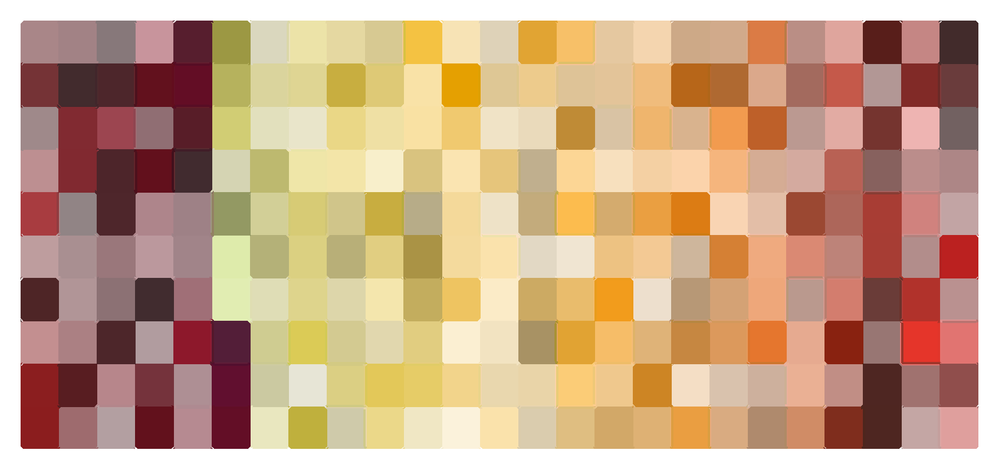

Floyd Zaiger wasn't the first to breed plums and apricots together, but he made their offspring mainstream.
A pioneer in experimental fruit breeding, Zaiger specialized in crossing species within the Prunus genus, which includes apricots, plums, peaches, nectarines, and cherries. Apricots and plums, in particular, hybridize easily. By repeatedly crossing the two—and then crossing their offspring, and their offspring's offspring—Zaiger created fruits with new flavors and traits. In 1989, his company, Zaiger Genetics, patented its first plum-apricot hybrid: the "Flavor Supreme" pluot.
Since then, Zaiger Genetics has patented more than a hundred pluot varieties with vivid names like "Dapple Dandy", "Flavor Grenade", and "Emerald Blush", along with many other Prunus interspecies crosses (which, like the pluot, have blended-species titles like the nectaplum, pluerry, or peacotum). These hybrids don't fit neatly on a family tree: most are the result of crosses of crosses of crosses... and so on.
Pluot patents granted to Zaiger Genetics
Like dog breeding, fruit breeding is about refining traits: a tougher skin for long-distance shipping on pallets or a thinner one for farmer's market tenderness; a color that's bold or delicate; the number of chill hours needed to set fruit in different climates; the timing of blossoms to extend the harvest.
Zaiger's hybrids weren't designed to ripen all at once. Each variety was tuned to flower and fruit at a slightly different moment (based on the climate of an orchard in California's Central Valley), ensuring that a pluot is ready for picking for nearly half the year.
The long pluot season
A fruit's most important (and subjective) trait, of course, is taste.
From 1993 to 2014, the Dave Wilson Nursery—which has exclusive rights to sell trees of patented Zaiger pluots—conducted blind taste tests of fruit varieties. The judges were retail nursery owners and employees, media personnel, radio personalities, garden writers, and members of the California Rare Fruit Growers Association. They rated each sample by acidity, sweetness, flavor, and attractiveness.
Ten pluot varieties have made it to the top of these taste tests. Although taste is in the palate of the beholder, the varieties that consistently scored highest weren't usually just the sweetest, but those balancing acidity, sugar, and complex flavor.
The pluots that top flavor palates
Ultimately, each pluot tells its own genetic story in color. Each square in the below mosaic comes from the officially reported skin color of a patented pluot variety, described in the technical standard of the Munsell color system and converted to hex codes for digital rendering.
The spectrum of pluots
